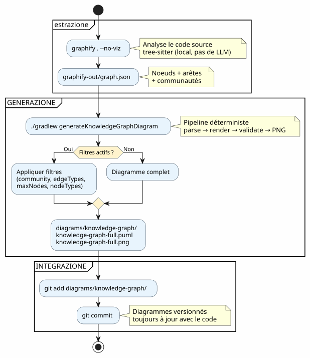
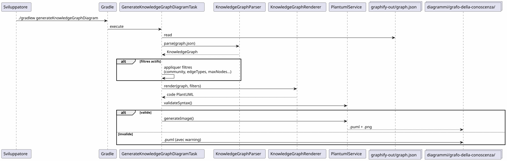

Integrare Graphify in un workflow Gradle: dal Knowledge Graph al diagramma PlantUML in un comando
Publié le 19 April 2026
- Il problema : dei diagrammi sempre in ritardo rispetto al codice
- La soluzione: un pipeline deterministico Knowledge Graph → PlantUML
- Passo 1: Installare Graphify e estrarre il Knowledge Graph
- Bake (generate) the site jbake -b
- Bake and serve locally jbake -b -s
- Bake and watch for changes jbake -b --reset
- Specify source and destination jbake source_folder output_folder
- Clear the output directory before baking jbake -b . output --reset
`Graphify è uno strumento Python che analizza il tuo codebase e costruisce un grafo di conoscenze strutturato:- Configurare le esclusioni
- Estrarre il Knowledge Graph
- Passo 2: Il plugin Gradle trasforma il Knowledge Graph in PlantUML
- Fase 3: Utilizzo quotidiano
- Il pipeline completo in un workflow Gradle
- Il dogfooding: il plugin si documenta da sé
- Perché è deterministico (e perché conta)
- Diagrammi del pipeline stesso
- Integrazione nella governance del progetto
- Impostazione: lista di controllo in 5 minuti
- Trappole e mitigazioni
- Ciò che si ottiene alla fine
- Link
Il tuo codebase cresce. Le dipendenze tra i moduli si moltiplicano. La documentazione dell’architettura diventa obsoleta prima ancora di essere scritta. E se il tuo build Gradle potesse automaticamente generare diagrammi aggiornati a partire dalla struttura reale del codice? Questo è esattamente ciò che fa la pipeline Graphify + PlantUML Gradle Plugin :`graphify . --no-viz`estrae il Knowledge Graph,`./gradlew generateKnowledgeGraphDiagram`le trasforma in diagrammi PlantUML. Zero LLM, zero manuale, 100% deterministico.
- indice
-
[]
Il problema : dei diagrammi sempre in ritardo rispetto al codice
Ogni progetto che supera qualche migliaio di linee conosce questo sintomo :
-
Si disegna un diagramma di architettura all’inizio del progetto
-
Il codice evolve, le dipendenze cambiano
-
Il diagramma diventa una bugia decorativa
-
Nessuno lo aggiorna perché è penoso
-
I nuovi arrivati si basano su quello e commettono errori

La questione non è serve avere dei diagrammi ? — tutti sanno di sì. La questione è :chi li mantiene aggiornati?
La risposta: nessuno. A meno che non sia automatico.
La soluzione: un pipeline deterministico Knowledge Graph → PlantUML
Il principio è semplice: al posto di disegnare i diagrammi a mano, ligenera dalla struttura reale del codice.
Failed to generate image: PlantUML preprocessing failed: [From <input> (line 6) ] @startuml skinparam backgroundColor #FEFEFE skinparam componentStyle rectangle actor Développeur component "Graphify ^^^^^ Syntax Error? (Assumed diagram type: sequence) @startuml skinparam backgroundColor #FEFEFE skinparam componentStyle rectangle actor Développeur component "Graphify (pip install graphifyy)" as Graphify collections "graphify-out/graph.json (Grafo della conoscenza)" as KGJSON component "Plugin Gradle per PlantUML (generateKnowledgeGraphDiagram)" as Plugin component "KnowledgeGraphParser" as Parser component "KnowledgeGraphRenderer" as Renderer component "PlantumlService (validazione + rendering PNG)" as PS collections "diagrammi/knowledge-graph/\n(.puml + .png)" as Output Développeur --> Graphify : graphify . --no-viz Graphify --> KGJSON : extrait la structure\ndu code source Développeur --> Plugin : ./gradlew generateKnowledgeGraphDiagram Plugin --> Parser : parse(graph.json) Parser --> Plugin : KnowledgeGraph\n(noeuds + arêtes + communautés) Plugin --> Renderer : render(graph, filters) Renderer --> Plugin : code PlantUML\ndéterministe Plugin --> PS : validateSyntax + generateImage PS --> Output : .puml + .png note bottom of Plugin Pipeline DÉTERMINISTE Aucun appel LLM Résultat reproductible end note @enduml
Due comandi. È tutto.
# Étape 1 : extraire le Knowledge Graph
graphify . --no-viz
# Étape 2 : générer les diagrammes PlantUML
./gradlew generateKnowledgeGraphDiagramIl risultato? Dei file`.puml` et .png`in`diagrams/knowledge-graph/, versionati in Git, sempre aggiornati rispetto al codice.
Passo 1: Installare Graphify e estrarre il Knowledge Graph
Installazione
JBake CLI Commands ` # Initialize a new JBake project jbake -i
Bake (generate) the site jbake -b
Bake and serve locally jbake -b -s
Bake and watch for changes jbake -b --reset
Specify source and destination jbake source_folder output_folder
Clear the output directory before baking jbake -b . output --reset ` Graphify è uno strumento Python che analizza il tuo codebase e costruisce un grafo di conoscenze strutturato:
# Méthode recommandée
uv tool install graphifyy && graphify install --platform opencode
# Alternative avec pip
pip install graphifyy && graphify install --platform opencodeConfigurare le esclusioni
Creare un file`.graphifyignore`alla radice del progetto per escludere i file che non fanno parte della logica di business :
# Secrets — JAMAIS dans le graphe
*-context.yml
*.env
# Fichiers générés
build/
.gradle/
# Tests fonctionnels
src/functionalTest/Estrarre il Knowledge Graph
graphify . --no-vizLa bandiera`--no-viz`Salta la generazione HTML (inutile in una pipeline Gradle). Il risultato è un file`graphify-out/graph.json`contenente :
-
nodi: classi, funzioni, file — con il loro tipo e comunità
-
Lischerelazioni tra nodi (EXTRACTED dal codice, INFERRED dal LLM)
-
Comunità: raggruppamenti automatici di nodi collegati
graph.json{
"nodes": [
{"id": "0", "label": "LlmService", "file_type": "code", "community": 0},
{"id": "1", "label": "ApiKeyPool", "file_type": "code", "community": 0},
{"id": "2", "label": "PlantumlService", "file_type": "code", "community": 1}
],
"links": [
{"source": "1", "target": "0", "relation": "uses", "confidence": "EXTRACTED", "weight": 0.9},
{"source": "0", "target": "2", "relation": "calls", "confidence": "INFERRED", "weight": 0.7}
]
}|
Il codice sorgente ( |
Passo 2: Il plugin Gradle trasforma il Knowledge Graph in PlantUML
Architettura della pipeline
Il plugin`com.cheroliv.plantuml`integra un compito`generateKnowledgeGraphDiagram`che trasforma`graph.json`in diagrammi PlantUML in modototalmente deterministico:

I componenti interni
| Componente | Ruolo |
|---|---|
|
Parse`graph.json`— supporta 3 formati : graphify nativo ( |
|
Trasforma deterministicamente un`KnowledgeGraph`in codice PlantUML. Gruppi per tipo, comunità in package, legenda automatica. |
|
Task Gradle che orchestra : parse → render → validate → PNG. Configurabile tramite proprietà Gradle. |
|
Modelli di dati:`KnowledgeGraph`, |
|
Validazione sintattica + rendering PNG (riutilizzato da tutte le attività del plugin). |
Regole di rendering
Il renderer applica convenzioni visive deterministiche :
| Tipo di spigolo | Notazione PlantUML | Significato |
|---|---|---|
ESTRATTI |
|
Relazione estratta dal codice sorgente (certezza) |
DEDOTTO |
|
Relazione inferita dall’LLM (punteggio di fiducia) |
AMBIGUO |
|
Relazione ambigua (da verificare) |
Le comunità vengono renderizzate come pacchetti PlantUML con una palette di colori automatica.
Fase 3: Utilizzo quotidiano
Diagramma completo
# Générer le diagramme du Knowledge Graph complet
./gradlew generateKnowledgeGraphDiagramUscita :`diagrams/knowledge-graph/knowledge-graph-full.puml`+.png
Filtra per comunità
# Une seule communauté
./gradlew generateKnowledgeGraphDiagram \
-Pplantuml.kg.community=community_0
# Limiter le nombre de noeuds (lisibilité)
./gradlew generateKnowledgeGraphDiagram \
-Pplantuml.kg.community=community_0 \
-Pplantuml.kg.maxNodes=15Filtra per tipo di bordo
# Uniquement les relations certaines (EXTRACTED)
./gradlew generateKnowledgeGraphDiagram \
-Pplantuml.kg.edgeTypes=EXTRACTED
# Relations certaines + inférées
./gradlew generateKnowledgeGraphDiagram \
-Pplantuml.kg.edgeTypes=EXTRACTED,INFERREDFiltra per tipo di nodo e confidenza
# Uniquement les classes de code
./gradlew generateKnowledgeGraphDiagram \
-Pplantuml.kg.nodeTypes=code
# Seuil de confiance minimum (pour les INFERRED)
./gradlew generateKnowledgeGraphDiagram \
-Pplantuml.kg.minConfidence=0.7Directory di output personalizzata
./gradlew generateKnowledgeGraphDiagram \
-Pplantuml.kg.outputDir=docs/architectureRiferimento completo delle proprietà
| Proprietà | difetto | Description |
|---|---|---|
|
(tutte) |
Filtrare le comunità per nome (corrispondenza di sottostringa) |
|
(tutti) |
Tipi di archi separati da virgole:`EXTRACTED`, |
|
|
Soglia minima di confidenza per gli archi |
|
(illimitato) |
Numero massimo di nodi da visualizzare |
|
tutti |
Tipi di nodi separati da virgole (es. |
|
|
Directory di output per i file`.puml` et |
Il pipeline completo in un workflow Gradle
Workflow type

Integrazione nel ciclo di sviluppo
Il pipeline si integra naturalmente nelle fasi chiave dello sviluppo :
Failed to generate image: PlantUML preprocessing failed: [From <input> (line 5) ] @startuml skinparam backgroundColor #FEFEFE state "Sviluppo" as dev state "Estrazione ^^^^^ Syntax Error? (Assumed diagram type: state) @startuml skinparam backgroundColor #FEFEFE state "Sviluppo" as dev state "Estrazione graficare . --no-viz" as extract state "Generazione ./gradlew generateKnowledgeGraphDiagram" as generate state "Commit\ndiagrammi versionati" as commit [*] --> dev dev --> extract : Code modifié extract --> generate : graph.json à jour generate --> commit : .puml + .png générés commit --> dev : Diagrammes dans le repo note right of extract Quasi instantané sur du code Kotlin (tree-sitter, pas de LLM) end note note right of generate Déterministe Pas de LLM Résultat reproductible end note @enduml
Aggiornamento incrementale
Quando il codice cambia, non ricostruiamo tutto il grafo da zero :
# Mise à jour incrémentale (fichiers modifiés uniquement)
graphify . --update
# Puis régénérer les diagrammes
./gradlew generateKnowledgeGraphDiagram|
|
Il dogfooding: il plugin si documenta da sé
Il plugin PlantUML esiste per trasformare i prompt in diagrammi. Può anche trasformare il Knowledge Graph del suo proprio codebase in diagrammi di documentazione. È dogfooding : il plugin consuma il proprio servizio.
Failed to generate image: PlantUML preprocessing failed: [From <input> (line 6) ]
@startuml
skinparam backgroundColor #FEFEFE
skinparam componentStyle rectangle
package "Pipeline normale
(utente → diagrammi)" as normal {
^^^^^
Syntax Error? (Assumed diagram type: activity)
@startuml
skinparam backgroundColor #FEFEFE
skinparam componentStyle rectangle
package "Pipeline normale
(utente → diagrammi)" as normal {
[Fichier .prompt] as prompt
[LlmService\n+ ApiKeyPool] as llm1
[ProcessPlantumlPromptsTask] as task1
[Diagramme PNG] as out1
prompt --> task1
task1 --> llm1
llm1 --> out1
}
package "Pipeline Knowledge Graph
(deterministico, senza LLM)" as kg {
[graphify-out/graph.json] as kgjson
[KnowledgeGraphParser] as parser
[KnowledgeGraphRenderer] as renderer
[PlantumlService] as ps
[Diagramme PNG\n(documentation du plugin)] as out2
kgjson --> parser
parser --> renderer
renderer --> ps
ps --> out2
}
package "Pipeline Dogfooding
(LLM → documentazione del plugin)" as dogfood {
[GraphifyPromptAdapter] as gpa
[Fichiers .prompt\nauto-générés] as auto_prompt
[LlmService\n+ ApiKeyPool] as llm2
[ProcessPlantumlPromptsTask] as task2
[Diagramme PNG\n(documentation LLM)] as out3
kgjson --> gpa
gpa --> auto_prompt
auto_prompt --> task2
task2 --> llm2
llm2 --> out3
}
note "Stesso LlmService, stesso ApiKeyPool,
stesso PlantumlService
— ZERO duplicazione" as N
@enduml
Compiti Gradle associati :
| Compito | LLM ? | Description |
|---|---|---|
|
No |
Trasforma`graph.json`in PlantUML (deterministico) |
|
Sì |
Genera dei`.prompt`dal grafo, li tratta tramite LLM (dogfooding) |
# Documentation déterministe (rapide, pas de LLM)
./gradlew generateKnowledgeGraphDiagram
# Documentation LLM (plus riche, consomme des tokens)
./gradlew generateDiagramDocsPerché è deterministico (e perché conta)
Il punto chiave del pipeline`generateKnowledgeGraphDiagram`(No output)non chiama alcun LLM. La trasformazione`graph.json` → PlantUML est une fonction pure.
Failed to generate image: PlantUML preprocessing failed: [From <input> (line 6) ]
@startuml
skinparam backgroundColor #FEFEFE
skinparam componentStyle rectangle
rectangle "Pipeline deterministico
(generateKnowledgeGraphDiagram)" as det {
^^^^^
Syntax Error? (Assumed diagram type: activity)
@startuml
skinparam backgroundColor #FEFEFE
skinparam componentStyle rectangle
rectangle "Pipeline deterministico
(generateKnowledgeGraphDiagram)" as det {
[graph.json] as json
[KnowledgeGraphParser] as parser
[KnowledgeGraphRenderer] as renderer
[PlantUML code] as puml
json --> parser : parse
parser --> renderer : KnowledgeGraph
renderer --> puml : render (fonction pure)
}
rectangle "Pipeline LLM
(processPlantumlPrompts)" as llm {
[.prompt] as prompt
[LlmService] as llmSvc
[ChatModel] as model
[PlantUML code] as puml2
prompt --> llmSvc
llmSvc --> model : API call
model --> puml2 : réponse non-déterministe
}
note bottom of det
Même entrée → même sortie
Pas de latence réseau
Pas de coût en tokens
Reproductible en CI
end note
note bottom of llm
Même entrée → sortie variable
Latence réseau (1-5s)
Coût en tokens
Nécessite une clave API
end note
@enduml
I vantaggi concreti:
| vantaggio | Impatto |
|---|---|
riproducibilità |
Anche`graph.json`→ lo stesso diagramma. Esattamente. Ogni volta. |
zero costo |
Nessuna chiamata LLM = nessun token = nessuna fattura API |
Zero latenza |
Parse + render impiega ~100ms, non 1-5 secondi. |
Compatibile CI |
Nessuna chiave API necessaria. Nessun test flaky dovuto a una risposta LLM variabile. |
Versionabile |
Le |
Diagrammi del pipeline stesso
Per chiudere il cerchio, ecco il diagramma della pipeline così com’è generato dal plugin :

Integrazione nella governance del progetto
Nel nostro progetto, questo pipeline si integra in una strategia di gestione del contesto EAGER/LAZY per l’agente IA. Il Knowledge Graph sostituisce la documentazione architetturale manuale con un grafo strutturato, interrogabile e auto-aggiornato.
Failed to generate image: PlantUML preprocessing failed: [From <input> (line 16) ]
@startuml
skinparam backgroundColor #FEFEFE
skinparam componentStyle rectangle
package "EAGER\n(sempre carico)" as eager {
[PROMPT_REPRISE.adoc\n(contexte session)] as pr
[INDEX.adoc\n(vue d'ensemble)] as idx
[GRAPH_REPORT.adoc\n(~50 lignes)] as gr
}
package "LAZY — Strategia\n(su richiesta)" as lazy_strat {
[Méthodologies] as meth
[Archives sessions] as sessions
}
package "LAZY — Graphify
^^^^^
Syntax Error? (Assumed diagram type: component)
@startuml
skinparam backgroundColor #FEFEFE
skinparam componentStyle rectangle
package "EAGER\n(sempre carico)" as eager {
[PROMPT_REPRISE.adoc\n(contexte session)] as pr
[INDEX.adoc\n(vue d'ensemble)] as idx
[GRAPH_REPORT.adoc\n(~50 lignes)] as gr
}
package "LAZY — Strategia\n(su richiesta)" as lazy_strat {
[Méthodologies] as meth
[Archives sessions] as sessions
}
package "LAZY — Graphify
(query mirate)" as lazy_graph {
[graph.json] as gj
[Queries\n(query/path/explain)] as queries
}
package "Pipeline PlantUML\n(auto-generato)" as puml {
[generateKnowledgeGraphDiagram] as kgTask
[generateDiagramDocs] as ddTask
[Diagrammes PNG] as diagrams
}
Agent --> eager : Lit en début de session
Agent ..> lazy_strat : Charge si type détecté
Agent ..> lazy_graph : Query si besoin structurel
kgTask --> diagrams : Déterministe
ddTask --> diagrams : Via LLM
note right of gr
Condensé du Knowledge Graph
God nodes + communautés
Remplace ECOSYSTEM_OVERVIEW
(225 lignes → 50 lignes)
end note
@enduml
Il matrimonio dei due sistemi è complementare :
-
La strategia gestisce il QUAND e il COMMENT— governance, workflow, archiviazione
-
Graphify gestisce il QUOI e il OÙ — structure du code, relations, requêtes ciblées
_ La strategia di sessione gestisce ilQUANDO et le COME(governance, workflow, soglie), Graphify gestisce ilCosa et le dove(struttura del codice, relazioni, query mirate). Il pipeline PlantUML gestisce ilcon cosa(diagrammi deterministici, versionati, sempre aggiornati) _
Impostazione: lista di controllo in 5 minuti
| # | Fase | Ordine |
|---|---|---|
1 |
Installa Graphify |
|
2 |
Configurare le esclusioni |
creare`.graphifyignore` |
3 |
Estrarre il Knowledge Graph |
|
4 |
Generare i diagrammi |
|
5 |
Effettuare il commit dei risultati |
|
# Script complet en 5 commandes
uv tool install graphifyy
cat > .graphifyignore << 'EOF'
*-context.yml
*.env
build/
.gradle/
EOF
graphify . --no-viz
./gradlew generateKnowledgeGraphDiagram
git add graphify-out/GRAPH_REPORT.adoc graphify-out/graph.json diagrams/knowledge-graph/Trappole e mitigazioni
| trappola | Description | Mitigazione |
|---|---|---|
Grafo troppo denso |
Un grande progetto genera centinaia di nodi illeggibili |
usare`-Pplantuml.kg.maxNodes=30`e filtra per comunità |
Esclusioni troppo ampie |
Troppi file in`.graphifyignore`riduce il valore del grafo |
# Gradle Integration JBake can be integrated into Gradle builds using the JBake Gradle plugin or by calling the JBake CLI directly: |
Direzione delle frecce |
Le arete INFERRED possono avere una direzione ambigua |
Filtra per`-Pplantuml.kg.edgeTypes=EXTRACTED`solo per le relazioni certe |
Grafo obsoleto |
Il codice cambia ma il grafo non viene ricostruito |
utilizzare`graphify . --update`regolarmente o il hook git`graphify hook install` |
Costo aggiornato |
Gli aggiornamenti incrementali sono quasi gratuiti (tree-sitter local) |
Solo i documenti ( |
Ciò che si ottiene alla fine
Failed to generate image: PlantUML preprocessing failed: [From <input> (line 6) ]
@startuml
skinparam backgroundColor #FEFEFE
rectangle "prima" as avant {
card "Diagrammi disegnati a mano
Sempre obsoleti
^^^^^
Syntax Error? (Assumed diagram type: activity)
@startuml
skinparam backgroundColor #FEFEFE
rectangle "prima" as avant {
card "Diagrammi disegnati a mano
Sempre obsoleti
Nessuno li aggiorna" as av1 #FDEDEC
}
rectangle "DOPO" as apres {
card "Diagrammi generati automaticamente
Sempre aggiornati con il codice
Versionati in Git
Deterministici e riproducibili" as ap1 #E8F8E8
}
avant --> apres : graphify . --no-viz\n+ ./gradlew generateKnowledgeGraphDiagram
@enduml
I benefici concreti:
| Profitto | Dettaglio |
|---|---|
Documentazione sempre aggiornata |
I diagrammi riflettono il codice corrente, non uno snapshot manuale |
Zero sforzo di manutenzione |
I diagrammi vengono rigenerati ad ogni build |
Riduzione del debito tecnico |
Non è più necessario mantenere i diagrammi a mano |
Contesto visivo per i nuovi |
Un nuovo sviluppatore comprende l’architettura guardando i diagrammi |
fine-tuning potenziale |
Le coppie (sottografo → diagramma) sono esempi di addestramento IA |
Validazione automatica |
`PlantumlService.validateSyntax()`verifica ogni diagramma generato |
Onboarding rapido |
5 diagrammi = visione completa dell’architettura |
_ Chi ha un _perché può sopportare ogni come. __
Il perché: diagrammi sempre aggiornati. Il come: due comandi in una pipeline Gradle.
Link
-
I super suggerimenti del comando fg— articolo precedente sul flusso di lavoro del terminale
Articoli correlati
14 May 2026